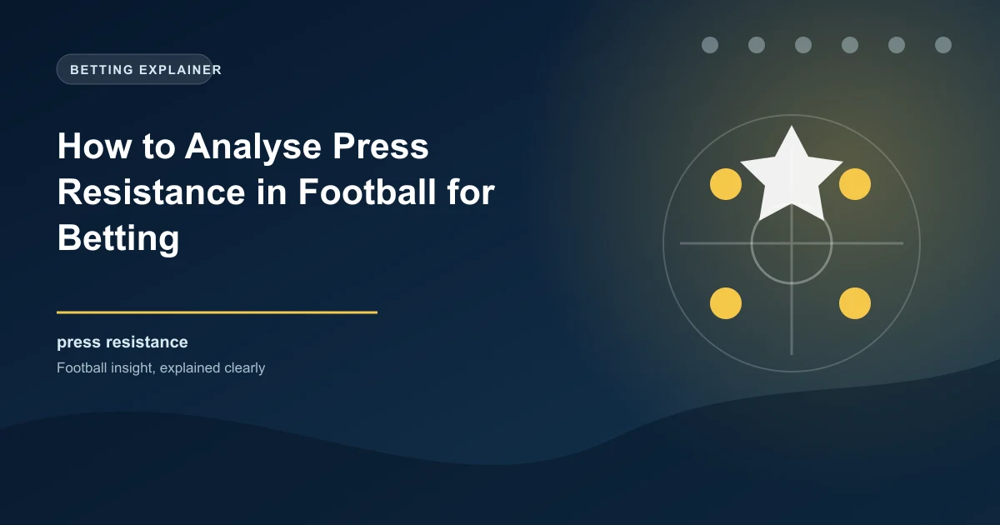

In modern football, the ability to play through an opposition press has become one of the most valuable tactical qualities a team can possess. Press resistance, the ability to maintain possession and progress the ball while under intense pressure from the opposition, separates elite teams from good teams and creates significant advantages that directly influence match outcomes. For bettors, understanding press resistance provides a powerful lens through which to evaluate matches and identify value in the betting market.
This guide will explain what press resistance means in practical terms, how to identify which teams possess this quality, and how to use press resistance analysis to make more informed betting decisions. Whether you are backing a team to win, predicting goals, or evaluating specific match markets, press resistance is a tactical factor that the market often overlooks.
Press resistance is the capacity of a team to receive, control, and progress the ball while the opposition is actively trying to win it back through pressing. A press-resistant team does not simply clear the ball when pressed. Instead, they use short passes, body positioning, spatial awareness, and technical quality to maintain possession and transition from defence to attack through controlled build-up play.
The concept exists on a spectrum. At one end are teams with exceptional press resistance, like Manchester City under Pep Guardiola or Barcelona during the tiki-taka era. These teams welcome the opposition press because it creates space behind the pressing players, allowing them to progress the ball through the lines and into dangerous positions. At the other end are teams that struggle under pressure, frequently losing the ball in dangerous areas or resorting to long balls that surrender possession.
Press resistance is most commonly tested in three areas of the pitch. First, at the back, when the goalkeeper and centre-backs are pressed while trying to build from the back. Second, in midfield, when the team's pivot players receive the ball under pressure from the opposition midfield. Third, on the wings, when wide players are pressed near the touchline with limited space to operate.
Certain teams have built their entire identity around press resistance. These teams consistently perform above their expected level when facing high-pressing opponents because they can turn the opposition's attacking intent against them.
Manchester City are the gold standard of press resistance in modern football. Their ability to play through the most intense presses is a direct result of Guardiola's coaching methodology, which emphasises positional play, third-man combinations, and the ability to receive the ball under pressure with your body oriented to play forward. When opponents press City high, they often find themselves chasing shadows as quick one-touch passing moves the ball past the pressing structure.
Brighton under Roberto De Zerbi took press resistance to another level in the Premier League. De Zerbi's system deliberately invited the opposition press by having the goalkeeper and centre-backs hold the ball in deep positions, waiting for the press to commit before exploiting the space behind it. This high-risk, high-reward approach made Brighton one of the most entertaining and tactically fascinating teams in the league.
Real Madrid, while not traditionally associated with possession-based play, possess exceptional press resistance through individual quality. Players like Luka Modric and Toni Kroos, and now younger technicians in the squad, have the ability to receive the ball under any amount of pressure and find a solution. Their press resistance manifests differently from City's: less about systematic passing patterns and more about individual brilliance in tight spaces.
When a press-resistant team faces a high-pressing opponent, the match dynamic becomes a tactical chess match with significant implications for betting outcomes. The pressing team commits players forward to win the ball high up the pitch. If they succeed, they can create scoring opportunities in dangerous areas. If they fail, the press-resistant team can exploit the space left behind the pressing players.
This dynamic has a direct impact on several betting markets. First, the possession market. Press-resistant teams typically maintain higher possession percentages against high-pressing opponents because they can keep the ball under pressure rather than conceding it. Second, the corners market. When a pressing team fails to win the ball high up, the press-resistant team often progresses into the final third and wins corners from defensive clearances. Third, the cards market. Frustrated pressing teams commit more fouls as the game progresses, leading to higher card counts.
Perhaps most importantly, press resistance affects the goals market in counterintuitive ways. Against a high press, a press-resistant team can create high-quality scoring opportunities by playing through the press and attacking the space behind it. This means that matches between press-resistant teams and high-pressing teams can produce more goals than the pre-match analysis might suggest, particularly if the pressing team's defensive structure breaks down.
Several statistical metrics can help you evaluate a team's press resistance. These metrics are available on platforms like FBref, StatsBomb, and Understat, and they provide objective measures of a team's ability to play under pressure.
Progressive Passes: This metric measures passes that move the ball at least 10 yards closer to the opponent's goal. Teams with high progressive pass counts tend to be press-resistant because they can advance the ball through the lines even when opponents are trying to compress the space.
Progressive Carries: Similar to progressive passes, but for dribbling. Teams with players who can carry the ball under pressure are inherently more press-resistant because they can break the press through individual dribbling as well as passing.
Passes Under Pressure: Some data providers track the percentage of passes completed while under direct pressure from an opponent. A high completion rate under pressure is the most direct measure of press resistance.
PPDA (Passes Per Defensive Action): While this metric is typically used to measure a team's pressing intensity, it can also indicate press resistance. Teams that maintain high pass completion rates against low PPDA opponents (meaning opponents who press intensely) demonstrate strong press resistance.
Build-Up Sequences: This tracks how a team progresses the ball from their own third to the final third. Teams with long, uninterrupted build-up sequences are more press-resistant than teams who rely on long balls to bypass the press.
Press resistance becomes most important in specific tactical matchups. The most significant is the clash between a high-pressing team and a build-up-oriented team. When Liverpool under Jurgen Klopp pressed Manchester City under Guardiola, the outcome often depended on whether City could play through Liverpool's press. When they could, City dominated. When they could not, Liverpool's pressing won the ball in dangerous areas and led to goals.
Another important matchup is between teams with contrasting pressing intensities. If a high-pressing team faces a low-block team that does not try to build from the back, press resistance becomes less relevant because the ball rarely enters the zones where pressing occurs. However, if both teams press high, the match becomes a contest of which team is more press-resistant, and this factor often determines the outcome.
The quality gap between the teams also affects how much press resistance matters. When a technically superior team faces a lesser opponent who presses aggressively, the superior team's press resistance allows them to punish the opponent's defensive commitment. This is why top teams often score freely against mid-table sides who try to press them: the press creates space that the superior team exploits.
Understanding press resistance creates several practical betting applications. The most direct is identifying matches where a press-resistant team faces a high-pressing opponent. In these matches, the press-resistant team typically has an edge that the market may undervalue, particularly if the market is focused on recent form or league position rather than tactical dynamics.
The possession and territory markets are natural targets for press resistance analysis. A press-resistant team facing a high press will typically dominate possession and territory, making them strong candidates in possession-based markets. Similarly, the over corners market can offer value when a press-resistant team faces a pressing opponent, as the failed presses lead to territorial dominance and corner kicks.
The cards market is another area where press resistance analysis creates value. High-pressing teams that face press-resistant opponents become increasingly frustrated as the match progresses and their pressing fails to produce turnovers. This frustration manifests in more fouls, more tactical infractions, and more cards. Backing over cards in matches between high-pressing and press-resistant teams has shown positive historical returns.
There are several misconceptions about press resistance that can lead bettors astray. The first is that press resistance guarantees success. While being press-resistant is a significant advantage, it does not guarantee results. A team can be excellent at playing through a press but still lose because they lack cutting edge in the final third or because the opposition scores from a set piece.
The second misconception is that all high-pressing teams struggle against press-resistant opponents. While this is generally true, some high-pressing teams have developed strategies to counter press resistance. They may press in a more controlled manner, using a mid-block rather than a high press, to limit the space behind the pressing line while still putting pressure on the build-up.
The third misconception is that press resistance is solely a technical attribute. In reality, it is as much about tactical intelligence and spatial awareness as it is about technical quality. Players who understand where the space is and how to position their bodies to receive the ball under pressure can be highly press-resistant even without exceptional technical ability.
WinFulltime provides data-driven predictions that account for tactical matchups like press resistance.
View Today's Predictions Win
Win